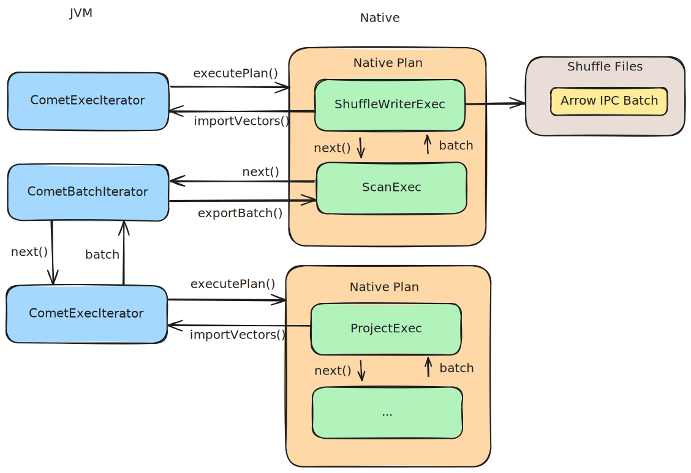

Comet Plugin Architecture¶
Overview¶
The Comet plugin enhances Spark SQL by introducing optimized query execution and shuffle mechanisms leveraging native code. It integrates with Spark’s plugin framework and extension API to replace or extend Spark’s default behavior.
Plugin Components¶
Comet SQL Plugin¶
The entry point to Comet is the org.apache.spark.CometPlugin class, which is registered in Spark using the following configuration:
--conf spark.plugins=org.apache.spark.CometPlugin
The plugin is loaded on the Spark driver and does not provide executor-side plugins.
The plugin will update the current SparkConf with the extra configuration provided by Comet, such as executor memory
configuration.
The plugin also registers CometSparkSessionExtensions with Spark’s extension API.
CometSparkSessionExtensions¶
On initialization, this class registers two physical plan optimization rules with Spark: CometScanRule
and CometExecRule. These rules run whenever a query stage is being planned during Adaptive Query Execution, and
run once for the entire plan when Adaptive Query Execution is disabled.
CometScanRule¶
CometScanRule replaces any Parquet scans with Comet operators. There are different paths for Spark v1 and v2 data sources.
When reading from Parquet v1 data sources, Comet replaces FileSourceScanExec with a CometScanExec, and for v2
data sources, BatchScanExec is replaced with CometBatchScanExec. In both cases, Comet replaces Spark’s Parquet
reader with a custom vectorized Parquet reader. This is similar to Spark’s vectorized Parquet reader used by the v2
Parquet data source but leverages native code for decoding Parquet row groups directly into Arrow format.
Comet only supports a subset of data types and will fall back to Spark’s scan if unsupported types
exist. Comet can still accelerate the rest of the query execution in this case because CometSparkToColumnarExec will
convert the output from Spark’s scan to Arrow arrays. Note that both spark.comet.exec.enabled=true and
spark.comet.convert.parquet.enabled=true must be set to enable this conversion.
Refer to the Supported Spark Data Types section in the contributor guide to see a list of currently supported data types.
CometExecRule¶
This rule traverses bottom-up from the original Spark plan and attempts to replace each operator with a Comet equivalent.
For example, a ProjectExec will be replaced by CometProjectExec.
When replacing a node, various checks are performed to determine if Comet can support the operator and its expressions. If an operator, expression, or data type is not supported by Comet then the reason will be stored in a tag on the underlying Spark node and the plan will not be converted.
Comet does not support partially replacing subsets of the plan within a query stage because this would involve adding transitions to convert between row-based and columnar data between Spark operators and Comet operators and the overhead of this could outweigh the benefits of running parts of the query stage natively in Comet.
Query Execution¶
Once the plan has been transformed, any consecutive native Comet operators are combined into a CometNativeExec which contains
a protocol buffer serialized version of the plan (the serialization code can be found in QueryPlanSerde).
Spark serializes the physical plan and sends it to the executors when executing tasks. The executors deserialize the plan and invoke it.
When CometNativeExec is invoked, it will pass the serialized protobuf plan into
Native.createPlan, which invokes the native code via JNI, where the plan is then deserialized.
In the native code there is a PhysicalPlanner struct (in planner.rs) which converts the deserialized plan into an
Apache DataFusion ExecutionPlan. In some cases, Comet provides specialized physical operators and expressions to
override the DataFusion versions to ensure compatibility with Apache Spark.
The leaf nodes in the physical plan are always ScanExec and each of these operators will make a JNI call to
CometBatchIterator.next() to fetch the next input batch. The input could be a Comet native Parquet scan,
a Spark exchange, or another native plan.
CometNativeExec creates a CometExecIterator and applies this iterator to the input RDD
partitions. Each call to CometExecIterator.next() will invoke Native.executePlan. Once the plan finishes
executing, the resulting Arrow batches are imported into the JVM using Arrow FFI.
Shuffle¶
Comet integrates with Spark’s shuffle mechanism, optimizing both shuffle writes and reads. Comet’s shuffle manager must be registered with Spark using the following configuration:
--conf spark.shuffle.manager=org.apache.spark.sql.comet.execution.shuffle.CometShuffleManager
Shuffle Writes¶
For shuffle writes, a ShuffleMapTask runs in the executors. This task contains a ShuffleDependency that is
broadcast to all of the executors. It then passes the input RDD to ShuffleWriteProcessor.write() which
requests a ShuffleWriter from the shuffle manager, and this is where it gets a Comet shuffle writer.
ShuffleWriteProcessor then invokes the dependency RDD and fetches rows/batches and passes them to Comet’s
shuffle writer, which writes batches to disk in Arrow IPC format.
As a result, we cannot avoid having one native plan to produce the shuffle input and another native plan for writing the batches to the shuffle file.
Shuffle Reads¶
For shuffle reads a ShuffledRDD requests a ShuffleReader from the shuffle manager. Comet provides a
CometBlockStoreShuffleReader which is implemented in JVM and fetches blocks from Spark and then creates an
ArrowReaderIterator to process the blocks using Arrow’s StreamReader for decoding IPC batches.
Arrow FFI¶
Due to the hybrid execution model, it is necessary to pass batches of data between the JVM and native code.
The foundation for Arrow FFI is the Arrow C Data Interface, which provides a stable ABI-compatible interface for accessing Arrow data structures from multiple languages.
CometExecIteratorinvokes native plans and uses Arrow FFI to read the output batchesNative
ScanExecoperators callCometBatchIteratorvia JNI to fetch input batches from the JVM
End to End Flow¶
The following diagram shows an example of the end-to-end flow for a query stage.
